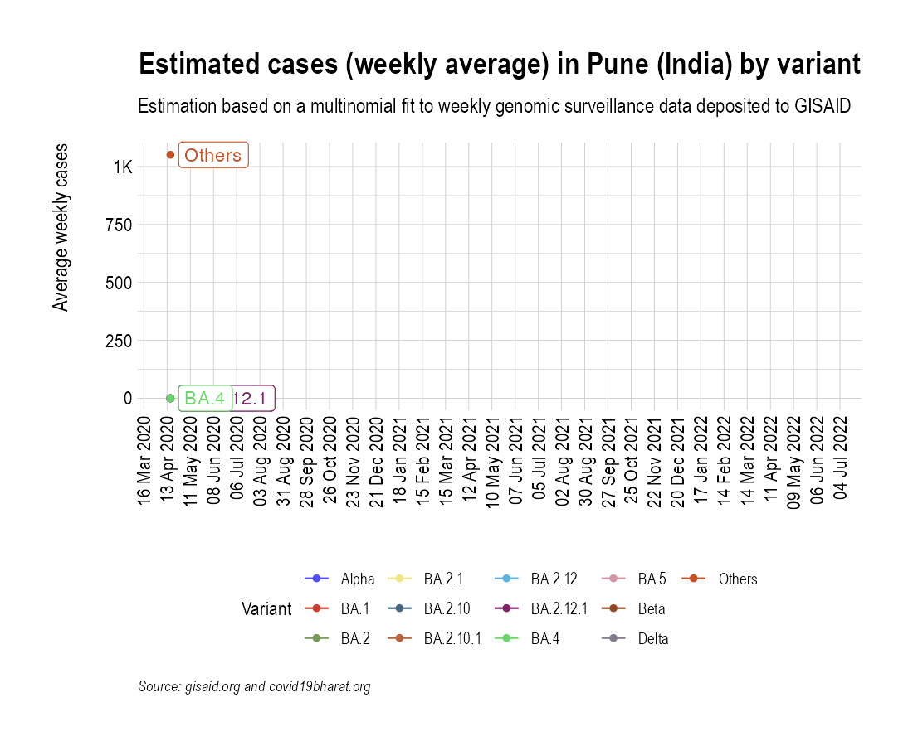
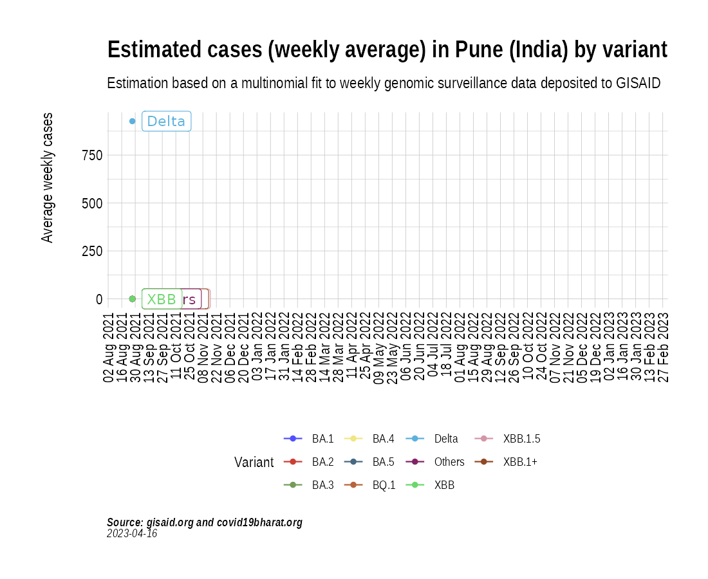

Animation of projected weekly cases - Pune (India)
Source:vignettes/VariantAnimation-Pune.Rmd
VariantAnimation-Pune.Rmd
suppressPackageStartupMessages({
library(covmuller)
library(tidyverse)
})
theme_set(CovmullerTheme())Get variants data for India
gisaid_metadata <- qs::qread("~/data/epicov/metadata_tsv_2023_08_19.qs")
gisaid_india <- FilterGISAIDIndia(gisaid_metadata_all = gisaid_metadata)
vocs <- GetVOCs()
omicron <- vocs[["omicron"]]
vocs[["omicron"]] <- NULL
custom_voc_mapping <- list(
`BA.1` = "BA.1",
`BA.1.*` = "BA.1",
`BA.2` = "BA.2",
`BA.2.*` = "BA.2",
`BA.3` = "BA.3",
`BA.3.*` = "BA.3",
`BA.4` = "BA.4",
`BA.4.*` = "BA.4",
`BA.5` = "BA.5",
`BA.5.*` = "BA.5",
`XBB` = "XBB",
`XBB.1` = "XBB.1+",
`XBB.1.*` = "XBB.1+",
`XBB.1.5` = "XBB.1.5",
`BQ.1` = "BQ.1",
`BQ.1.*` = "BQ.1"
)
gisaid_india <- gisaid_india %>%
filter(pangolin_lineage != "None") %>%
filter(pangolin_lineage != "Unassigned")
gisaid_india$District <- stringr::str_to_title(gisaid_india$District)
gisaid_india$City <- stringr::str_to_title(gisaid_india$City)
gisaid_india$custom_city <- gisaid_india$City
gisaid_india$custom_city[gisaid_india$custom_city == ""] <- gisaid_india$District[gisaid_india$custom_city == ""]
gisaid_india$custom_city <- stringr::str_to_title(gisaid_india$custom_city)
gisaid_india <- CollapseLineageToVOCs(
variant_df = gisaid_india,
vocs = vocs,
custom_voc_mapping = custom_voc_mapping,
summarize = FALSE
)Get monthly cases for Pune
pune_monthly_cases <- GetIndiaConfirmedCasesMonthlyLong(level = "district") %>% filter(District == "Pune")
head(pune_monthly_cases)## # A tibble: 6 × 4
## # Groups: MonthYear, State [6]
## MonthYear State District value
## <yearmon> <chr> <chr> <dbl>
## 1 Apr 2020 Maharashtra Pune 1248
## 2 May 2020 Maharashtra Pune 6671
## 3 Jun 2020 Maharashtra Pune 14408
## 4 Jul 2020 Maharashtra Pune 66904
## 5 Aug 2020 Maharashtra Pune 85874
## 6 Sep 2020 Maharashtra Pune 117959
Get weekly cases for Pune
pune_seq_stats <- TotalSequencesPerMonthCountrywise(gisaid_india %>% filter(custom_city == "Pune"), rename_country_as_state = TRUE)
p2 <- BarPlot(pune_seq_stats, ylabel = "Sequenced per month", color = "slateblue1", label_si = TRUE, title = "Total sequences deposited to GISAID from Pune (India)", caption = "**Source: gisaid.org **<br>")
p2
Overall, how much has Pune sequenced over months?
While the absolute numbers are informative, a more useful metric is the proportion of cases (cases sequenced over total cases) that are getting sequenced. Here we look at the proportion of cases that have been sequenced in India over the course of the pandemic:
pune_monthly_cases_tmp <- pune_monthly_cases %>% select(MonthYear, value)
pune_monthly_cases_tmp$State <- "India"
pune_monthly_cases_tmp$type <- "Confirmed"
pune_monthly_cases_tmp <- pune_monthly_cases_tmp %>% select(MonthYear, State, value, type)
sequencing_proportion <- CombineSequencedCases(
cases_sequenced = pune_seq_stats,
confirmed_long = pune_monthly_cases_tmp
)
p3 <- BarPlot(sequencing_proportion, yaxis = "percent_sequenced_collected", ylabel = "% deposited to GISAID", color = "yellowgreen", title = "Proportion of cases deposited to GISAID from Pune (India)", caption = "**Source: gisaid.org and covid19bharat.org**<br>")
p3
p1 / p2 / p3
Project weekly cases to variant prevalence data from GISAID
confirmed_subset_dateweekwise_long <- GetIndiaConfirmedCasesWeeklyLong(level = "district")
gisaid_dist_weekwise <- SummarizeVariantsWeekwise(gisaid_india %>% filter(custom_city == "Pune") %>% arrange(WeekYearCollected))
confirmed_subset_dateweekwise_long_dist <- confirmed_subset_dateweekwise_long %>%
filter(District %in% c("Pune")) %>%
rename(n = value) %>%
rename(WeekYearCollected = WeekYear) %>%
dplyr::select(-contains("type")) %>%
filter(WeekYearCollected >= min(gisaid_dist_weekwise$WeekYearCollected))
confirmed_subset_dateweekwise_long_dist$State <- NULL
voc_to_keep <- gisaid_dist_weekwise %>%
group_by(lineage_collapsed) %>%
summarise(n_sum = sum(n)) %>%
filter(n_sum > 1) %>%
pull(lineage_collapsed) %>%
unique()
gisaid_dist_weekwise <- gisaid_dist_weekwise %>% filter(lineage_collapsed %in% voc_to_keep)
india_cases_pred_prob_sel_long <- FitMultinomWeekly(gisaid_dist_weekwise, confirmed_subset_dateweekwise_long_dist)## # weights: 48 (33 variable)
## initial value 16949.548258
## iter 10 value 6706.802192
## iter 20 value 4716.726308
## iter 30 value 4197.632882
## iter 40 value 4136.059326
## iter 50 value 4082.909293
## iter 60 value 4064.498699
## iter 70 value 4054.743474
## iter 80 value 4052.957756
## iter 90 value 4048.697001
## iter 100 value 4044.649724
## iter 110 value 4041.776906
## iter 120 value 4036.491866
## iter 130 value 4030.075264
## iter 140 value 4027.226137
## iter 150 value 4026.695167
## iter 160 value 4025.715030
## iter 170 value 4024.683905
## iter 180 value 4023.970684
## iter 190 value 4021.756384
## iter 200 value 4017.275040
## iter 210 value 4017.080985
## iter 220 value 4014.981804
## iter 230 value 4013.947574
## iter 240 value 4013.700441
## iter 250 value 4013.555543
## iter 260 value 4013.164764
## iter 270 value 4012.216084
## iter 280 value 4012.184901
## iter 290 value 4011.556278
## iter 300 value 4011.304884
## iter 310 value 4011.187804
## iter 320 value 4010.937280
## iter 330 value 4010.509060
## iter 340 value 4004.812008
## iter 350 value 4004.557313
## iter 360 value 4003.385463
## iter 370 value 4002.948421
## iter 380 value 4002.828364
## iter 390 value 4002.253646
## iter 400 value 4001.170697
## iter 410 value 4000.980812
## iter 420 value 4000.557634
## iter 430 value 4000.329855
## iter 440 value 4000.233523
## iter 450 value 3999.996170
## iter 460 value 3999.631613
## iter 470 value 3999.460062
## iter 470 value 3999.460026
## final value 3999.460026
## converged
the_anim <- PlotVariantPrevalenceAnimated(india_cases_pred_prob_sel_long, title = "Estimated cases (weekly average) in Pune (India) by variant", caption = "**Source: gisaid.org and covid19bharat.org**", date_breaks = "28 days")
gganimate::anim_save(filename = here::here("docs/articles/Pune_animated.gif"), animation = the_anim)
Look at cases after January, 2022 only:
confirmed_subset_dateweekwise_long <- GetIndiaConfirmedCasesWeeklyLong(level = "district")
confirmed_subset_dateweekwise_long <- confirmed_subset_dateweekwise_long %>%
filter(WeekYear >= tsibble::yearweek("2021 W35")) %>%
filter(District %in% c("Pune")) %>%
group_by(WeekYear) %>%
summarise(n = sum(value)) %>%
arrange(WeekYear) %>%
rename(WeekYearCollected = WeekYear)
gisaid_dist <- gisaid_india %>%
filter(MonthYearCollected > "Dec 2021") %>%
filter(custom_city == "Pune") %>%
arrange(WeekYearCollected)
gisaid_weekwise <- SummarizeVariantsWeekwise(gisaid_dist)
voc_to_keep <- gisaid_weekwise %>%
group_by(lineage_collapsed) %>%
summarise(n_sum = sum(n)) %>%
filter(n_sum > 1) %>%
pull(lineage_collapsed) %>%
unique()
gisaid_weekwise <- gisaid_weekwise %>% filter(lineage_collapsed %in% voc_to_keep)
cases_pred_prob_sel_long <- FitMultinomWeekly(gisaid_weekwise, confirmed_subset_dateweekwise_long)## # weights: 40 (27 variable)
## initial value 5588.374021
## iter 10 value 2249.884381
## iter 20 value 1943.444058
## iter 30 value 1917.812535
## iter 40 value 1908.408851
## iter 50 value 1903.227312
## iter 60 value 1897.740763
## iter 70 value 1892.623706
## iter 80 value 1890.799663
## iter 90 value 1887.948376
## iter 100 value 1886.712546
## iter 110 value 1886.434013
## iter 120 value 1886.420467
## iter 130 value 1886.352449
## iter 140 value 1885.994723
## iter 150 value 1885.753313
## iter 160 value 1885.715200
## iter 170 value 1885.621428
## iter 180 value 1885.570500
## iter 190 value 1885.556944
## iter 200 value 1885.524692
## iter 210 value 1885.512687
## iter 220 value 1885.509263
## final value 1885.508615
## converged
the_anim <- PlotVariantPrevalenceAnimated(cases_pred_prob_sel_long, title = "Estimated cases (weekly average) in Pune (India) by variant", caption = "**Source: gisaid.org and covid19bharat.org**<br>")## `geom_line()`: Each group consists of only one observation.
## ℹ Do you need to adjust the group aesthetic?
## `geom_line()`: Each group consists of only one observation.
## ℹ Do you need to adjust the group aesthetic?
gganimate::anim_save(filename = here::here("docs/articles/Pune_animated_2021.gif"), animation = the_anim)
Look at cases in the last few weeks:
confirmed_subset_dateweekwise_long <- GetIndiaConfirmedCasesWeeklyLong(level = "district")
confirmed_subset_dateweekwise_long <- confirmed_subset_dateweekwise_long %>%
filter(WeekYear >= tsibble::yearweek("2022 W12")) %>%
filter(District %in% c("Pune")) %>%
group_by(WeekYear) %>%
summarise(n = sum(value)) %>%
arrange(WeekYear) %>%
rename(WeekYearCollected = WeekYear)
gisaid_dist <- gisaid_india %>%
filter(MonthYearCollected > "Dec 2021") %>%
filter(custom_city == "Pune") %>%
arrange(WeekYearCollected)
gisaid_weekwise <- SummarizeVariantsWeekwise(gisaid_dist)
voc_to_keep <- gisaid_weekwise %>%
group_by(lineage_collapsed) %>%
summarise(n_sum = sum(n)) %>%
filter(n_sum > 1) %>%
pull(lineage_collapsed) %>%
unique()
gisaid_weekwise <- gisaid_weekwise %>% filter(lineage_collapsed %in% voc_to_keep)
cases_pred_prob_sel_long <- FitMultinomWeekly(gisaid_weekwise, confirmed_subset_dateweekwise_long)## # weights: 40 (27 variable)
## initial value 5588.374021
## iter 10 value 2249.884381
## iter 20 value 1943.444058
## iter 30 value 1917.812535
## iter 40 value 1908.408851
## iter 50 value 1903.227312
## iter 60 value 1897.740763
## iter 70 value 1892.623706
## iter 80 value 1890.799663
## iter 90 value 1887.948376
## iter 100 value 1886.712546
## iter 110 value 1886.434013
## iter 120 value 1886.420467
## iter 130 value 1886.352449
## iter 140 value 1885.994723
## iter 150 value 1885.753313
## iter 160 value 1885.715200
## iter 170 value 1885.621428
## iter 180 value 1885.570500
## iter 190 value 1885.556944
## iter 200 value 1885.524692
## iter 210 value 1885.512687
## iter 220 value 1885.509263
## final value 1885.508615
## converged
the_anim <- PlotVariantPrevalenceAnimated(cases_pred_prob_sel_long, title = "Estimated cases (weekly average) in Pune (India) by variant", caption = "**Source: gisaid.org and covid19bharat.org**<br>")## `geom_line()`: Each group consists of only one observation.
## ℹ Do you need to adjust the group aesthetic?
## `geom_line()`: Each group consists of only one observation.
## ℹ Do you need to adjust the group aesthetic?
gganimate::anim_save(filename = here::here("docs/articles/Pune_animated_2022.gif"), animation = the_anim)